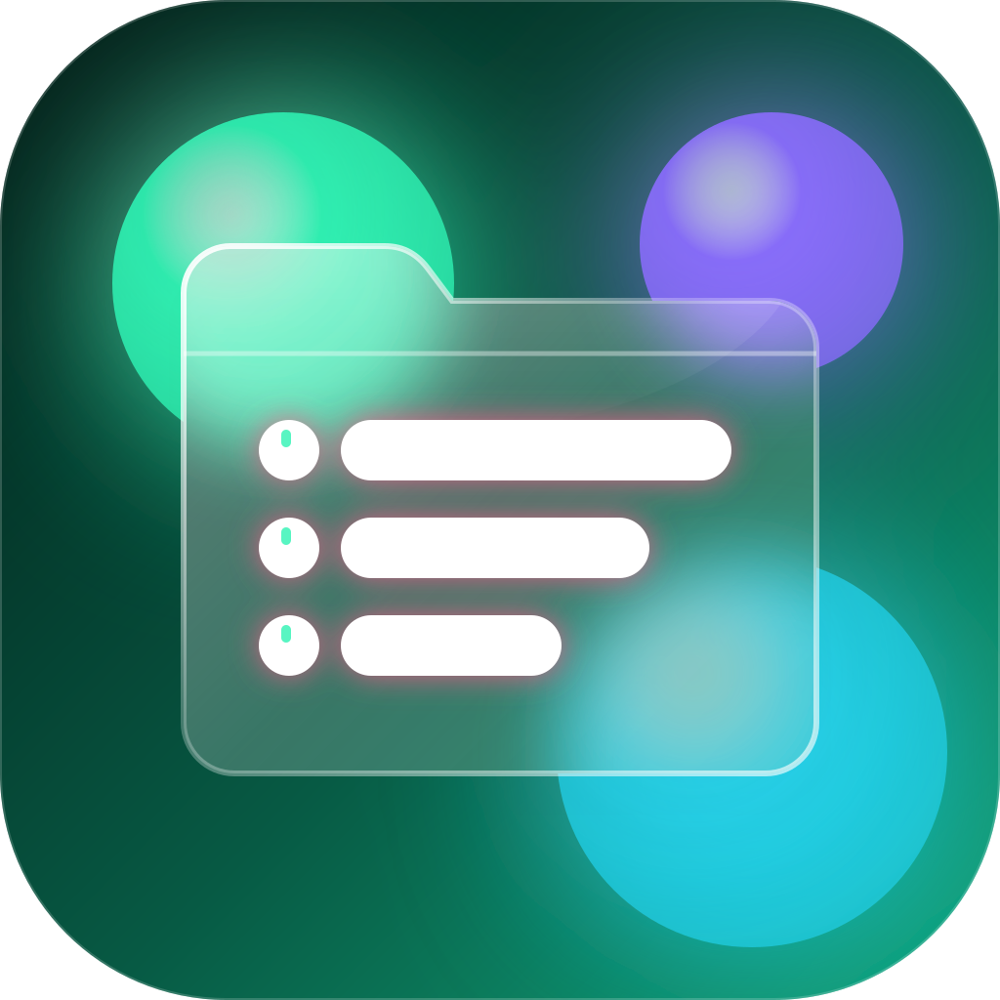

Omebly Explorer
FREE · OPEN SOURCE · BY OMEBLY
A file manager for Windows that does everything File Explorer does, plus the PDF tools, a fast copy engine and a beautiful glass look.
No accountNo adsNothing leaves your PCWindows 10 & 11

A file manager for Windows that does everything File Explorer does, plus the PDF tools, a fast copy engine and a beautiful glass look.